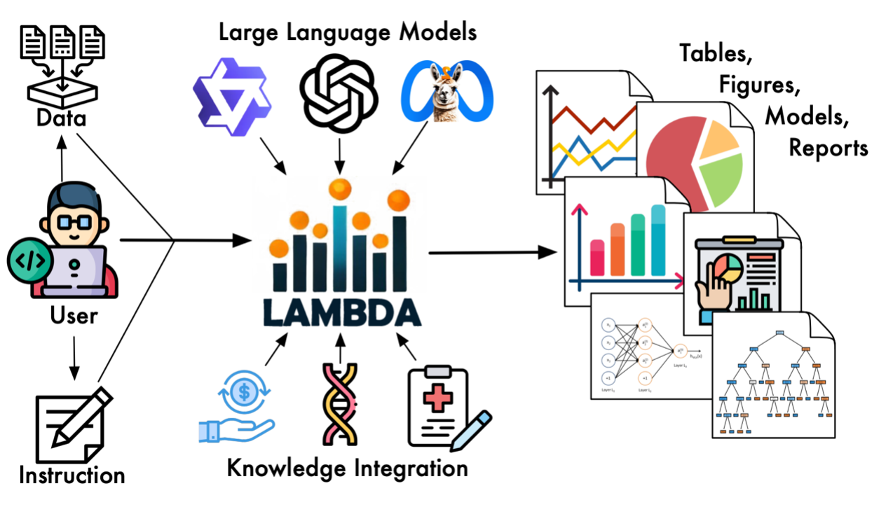
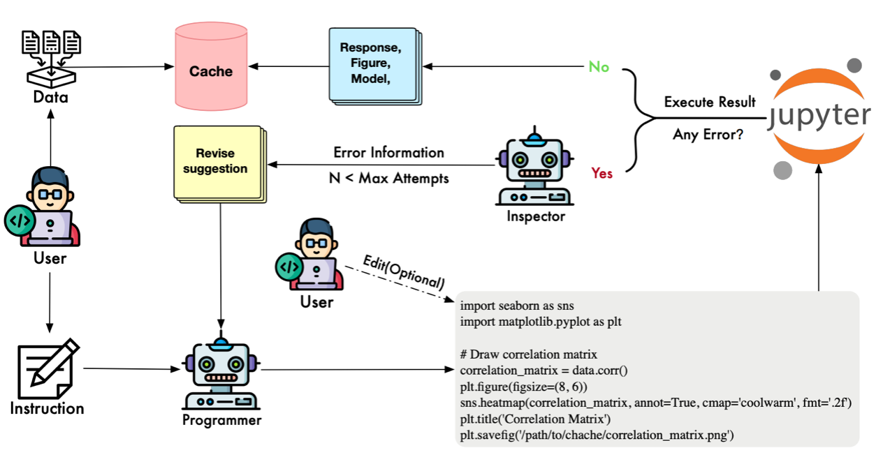
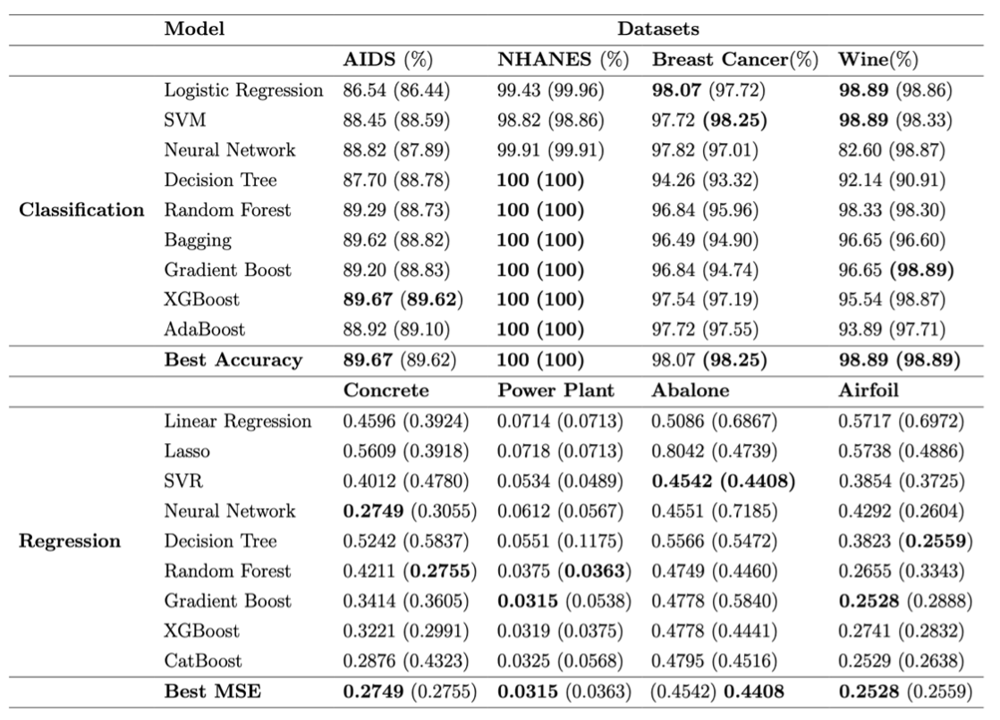
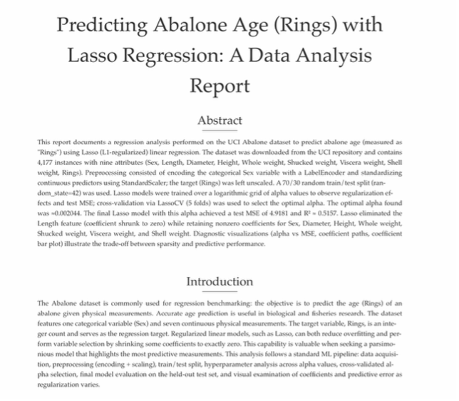

LAMBDA: A Large Model Based Data Agent
Introduction
🚀 LAMBDA: Revolutionizing Data Analysis with AI Agents
To address the high technical barriers and tedious debugging processes inherent in data analysis, a research team from The Hong Kong Polytechnic University has developed and open-sourced LAMBDA (LArge Model Based Data Agent). LAMBDA employs a dual-agent architecture (“Programmer” and “Inspector”) to enable natural language-driven data analysis. The system supports human-in-the-loop intervention and custom knowledge integration, aiming to reconstruct the interaction paradigm in scientific research and data science education.

📄 Publication:
Maojun, Sun; Ruijian, Han; Binyan, Jiang; Houduo, Qi; Defeng, Sun; Yancheng, Yuan; Jian, Huang. Lambda: A large model based data agent. Journal of the American Statistical Association. 2025 Jul 16:1-3.
Bridging the Gap Between Statistical Logic and Code Implementation
Despite the rise of AI, a significant gap remains between “knowing what to analyze” and “writing the code to do it”. For many researchers, students, and domain experts, complex data cleaning and iterative model debugging consume disproportionate amounts of time. LAMBDA is designed not to replace human reasoning, but to serve as an intelligent interface. It allows users to focus on hypotheses and analytical logic, while the AI agents handle the translation into executable code and the resolution of runtime errors.
System Architecture: Dual-Agent Collaboration with Self-Correction
🤖 Dual-Agent Collaboration Mechanism
Unlike simple “prompt-to-code” tools, LAMBDA utilizes a robust Dual-Agent Collaboration Mechanism:
- The Programmer Agent: Interprets user instructions, analyzes data characteristics, and generates the initial analysis code.
- The Inspector Agent: Monitors execution. Upon encountering errors, it analyzes the traceback, generates specific modification suggestions, and guides the Programmer to iteratively refine the code until execution is successful. This process mimics human debugging workflows, ensuring high success rates in complex tasks while allowing users to view and intervene in the code at any stage.

The Knowledge Integration Mechanism
🧠 Knowledge Integration Mechanism
A major challenge for general LLMs is accurately invoking specialized domain algorithms. LAMBDA addresses this via a Knowledge Integration Mechanism. Users can encapsulate custom models and algorithms as key-value pairs within a knowledge base. The system supports two integration modes:
- Full Mode: Injects complete code into the context for comprehensive model understanding.
- Core Mode: Injects only function descriptions while executing complex logic on the backend, preventing context overflow. This allows LAMBDA to align generated code with specific user intents (e.g., correcting loss function discrepancies) more effectively than standard plugin-based systems.

Versatility and Performance
Achieves modeling performance comparable to human experts in classification and regression tasks.

Automated invocation of CNNs and Transformers for image classification (e.g., MNIST) and text analysis.


Effective handling of high-dimensional genomic data and missing value imputation.


LAMBDA can actively correct the code of the knowledge base to align with human intent, which is difficult for existing plugin-based agent systems to achieve.


Value in Education and Research
LAMBDA transforms “code” from a barrier into a transparent utility. It supports the export of complete analysis reports and .ipynb files, making it an ideal tool for reproducible research. In educational settings, it allows students to focus on statistical concepts and problem-solving logic rather than syntax errors, fostering a “Problem-Modeling-Explanation” learning approach.
 
Discussions: Perspectives and Future Directions
We invited several prominent scholars in statistics and data science to provide comments and engage in a brainstorming discussion. Their perspectives are summarized below.
Professor David Donoho
Professor Donoho describes the release of LAMBDA as arriving at a “pivotal moment” for the discipline. This is an “impressive academic project” that shows how far agentic AI has come in replicating routine data analysis tasks, effectively setting a new standard for academic contribution in a space often dominated by commercial tech giants.
Professor Donoho suggests that academia can build upon this foundation by establishing rigorous “Chatbot Arena-style” benchmarks specifically designed to evaluate the scientific validity and reproducibility of such agents.
Professor Xiao-Li Meng
Professor Meng welcomes LAMBDA as a “refreshing article” for a statistical journal, noting its broad relevance to “systems thinking” in data science. He highlights the system’s potential to democratize data analysis, comparing it to a powerful “DIY” tool that empowers domain experts to conduct analysis on their own. Meng specifically appreciates the “Human-in-the-Loop” design, noting that it correctly positions AI not as a replacement, but as a partner that can help “build and enhance our mindware” (our own data intelligence).
He proposes the development of a “Data Minder” agent—a specialized persona dedicated to data quality and provenance—to further augment the user’s statistical thinking and ensure rigorous analysis planning.
Professor Fan Zhou and Professor Bang Liu
Professors Zhou and Liu commend the LAMBDA for “substantially lowering the barrier to entry” for advanced analytics, effectively democratizing access for users with little to no programming background. They highlight that LAMBDA is “poised to transform data science education” by offering interactive, hands-on learning experiences that were previously inaccessible to non-coders.
They envision a Self-Evolving Agent with long-term memory that can accumulate successful code snippets and problem-solving strategies over time, becoming increasingly proficient with every task it completes.
Professor Xihong Lin
Professor Lin lauds LAMBDA for its “significant advancement” over previous systems, specifically highlighting its practical utility for both practitioners and educators. They emphasize that the dual-agent architecture is not just a theoretical novelty but a “practically useful tool.” They further praise the system’s versatility across diverse datasets (genomic, image, text), noting that it “empowers non-technical domain scientists to perform various data analyses with ease.”
She suggests extending the framework with an “Analysis-Planning Agent” to collaborate with users on scientifically valid study designs, ensuring the analysis aligns with community standards before any code is written.
Dr. Sammy Tan
Dr. Tan is particularly impressed by the system’s openness and flexibility compared to “black-box” commercial alternatives. Sammy specifically values the “Knowledge Integration Mechanism” as one of the “most scientifically compelling features,” enabling a level of domain adaptability that standard LLM agents lack.
Dr. Tan recommends expanding the system’s versatility by integrating support for the R programming language and further refining the retrieval mechanism to support complex, domain-specific methodologies like sparse PCA for high-dimensional data.
Conclusion
LAMBDA represents a foundational step toward intelligent, collaborative data analysis. However, the commentaries suggest its true potential lies not just in automating code, but in evolving into a system that plans, reasons, and teaches—transforming AI from a mere tool into a genuine partner in scientific inquiry.
🌐 Open Source and Collaboration
LAMBDA is now fully open-source. We invite researchers, educators, and developers to explore the system and contribute to its development.
↩︎ Read more on Stats Up AI 📰 Community News